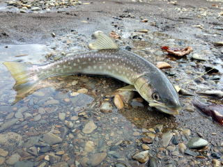
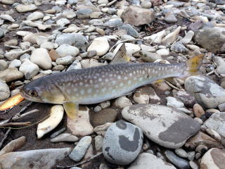
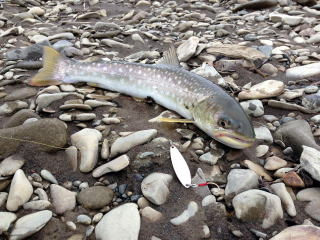
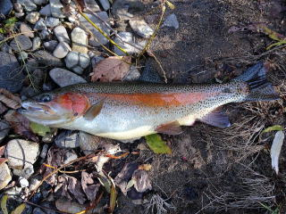

| ２０１３年４月２０日 下がりアメマス３９センチ （ONB橋2本目） |
２０１３年４月２０日 下がりアメマス４９センチ （CHR高速入り口） |
| ２０１３年４月２０日 下がりアメマス５３センチ （CHR高速入り口） |
２０１３年４月２１日 ニジマス３７センチ （CHR高速入り口） |
|  | |
| ２０１３年４月２１日 アメマス３９センチ （CHR高速入り口） |
２０１３年４月２９日 アメマス３７センチ （CHR高速入り口） |
 |
|
| ２０１３年４月３０日 アメマス３６センチ （CHR下流カーブ１本目） |
２０１３年５月２日 アメマス２８センチ （CHR下流カーブ１本目） |
| ２０１３年５月２日 アメマス２７センチ （CHR下流カーブ１本目） |
２０１３年５月２日 アメマス３４センチ （CHR下流カーブ１本目） |
|  |  |
| ２０１３年５月２日 アメマス３５センチ （CHR下流カーブ１本目） |
２０１３年５月２日 アメマス４５センチ （CHR下流カーブ１本目） |
| ２０１３年５月２日 アメマス３２センチ （CHR下流カーブ１本目） |
２０１３年５月２日 アメマス２９センチ （CHR下流カーブ１本目） |
| 画像なし | |
| ２０１３年６月１日 ニジマス３３センチ その他、２０センチ台７匹 （SHOR_DMの上の川） |
２０１３年６月１日 ニジマス１５匹以上。２５センチ超えなし （SHOR_DMの上の川） |
| ２０１３年６月２３日 ニジマス３７センチ(1) （SHOR_DM２本目橋の車止） |
２０１３年６月２３日 ニジマス３７センチ(2) （SHOR_DM２本目橋の車止） |
| ２０１３年７月１０日 ニジマス４２センチ(1) （AKN PRK） |
２０１３年７月１０日 ニジマス４２センチ(2) （AKN PRK） |
| ２０１３年７月１３日 ニジマス５４センチ(1) （AKN PRK） |
２０１３年７月１３日 ニジマス５４センチ(2) （AKN PRK） |
| ２０１３年７月３１日 ニジマス４８センチ(1) （AKN PRK） |
２０１３年７月３１日 ニジマス４８センチ(2) （AKN PRK） |
 |
|
| ２０１３年８月３日 アメマス４８センチ(1)卵あり （ONB橋2本目） |
２０１３年８月３日 アメマス４８センチ(2)卵あり （ONB橋2本目） |
| ２０１３年８月１０日 ヤマメ２６センチ （SRB） |
２０１３年８月１７日 アメマス２８センチ 上りアメマス目視するも釣れず （ONB橋2本目） |
| ２０１３年８月１７日 アメマス２７センチ その他ウグイ４０センチ、３５センチ、岩魚小さめ （WTNB） |
|
| ２０１３年８月１８日 サクラマス４３センチ(1) ７月末から開始できそう （SIBT） |
２０１３年８月１８日 サクラマス４３センチ(2) ７月末から開始できそう （SIBT） |
| ２０１３年８月１８日 ニジマス２２〜２５センチ３匹) （SRB） |
|
| ２０１３年８月３１日 ニジマス４６センチ(1) （AKN PRK） |
２０１３年８月３１日 ニジマス４６センチ(2) （AKN PRK） |
| ２０１３年９月７日 ニジマス２７センチ その他２０〜２３センチのもの。 （SHOR_DM２本目橋の車止） |
２０１３年９月７日 山女１７センチ （CHR） |
| ２０１３年１０月初旬までは、川の増水によりほとんど釣れない。 | ２０１３年１０月６日ニジマス２０センチ台３匹。 入り江が水温落ち着き釣れはじめた。 （SHOR_DM入り江） |
| ２０１３年１０月２０日ニジマス２３センチ １０ｇルアー速引き （SHOR_ヘアピン） |
２０１３年１０月２０日アメマス４３センチ(1) １１月もできそう （SHOR_DM下の川農家の上） |
| ２０１３年１０月２０日アメマス４３センチ(1) １１月もできそう （SHOR_DM下の川農家の上） |
２０１３年１０月２０日ニジマス３３センチ （SHOR_DM下の川農家の上） |
|  | |
| ２０１３年１１月３日ニジマス３１センチ （SHOR_DM下の川 橋から上り坂左に曲がり奥の橋下） |
２０１３年１１月３日ニジマス４９センチ 知り合い餌釣り。 (KKC 砂利上の更に上を左に曲がり、１本目の橋下) |
 |
|
| ２０１３年１１月１６日ニジマス３１センチ （SHOR_DMのかなり上流） |
２０１３年１１月１６日姫鱒３０〜３５センチ。 婚姻色。 （KSRKO 津別峠入り口から右に入る） |
| ２０１３年１１月１６日姫鱒３０〜３５センチ。 婚姻色。 （KSRKO 津別峠入り口から右に入る） |